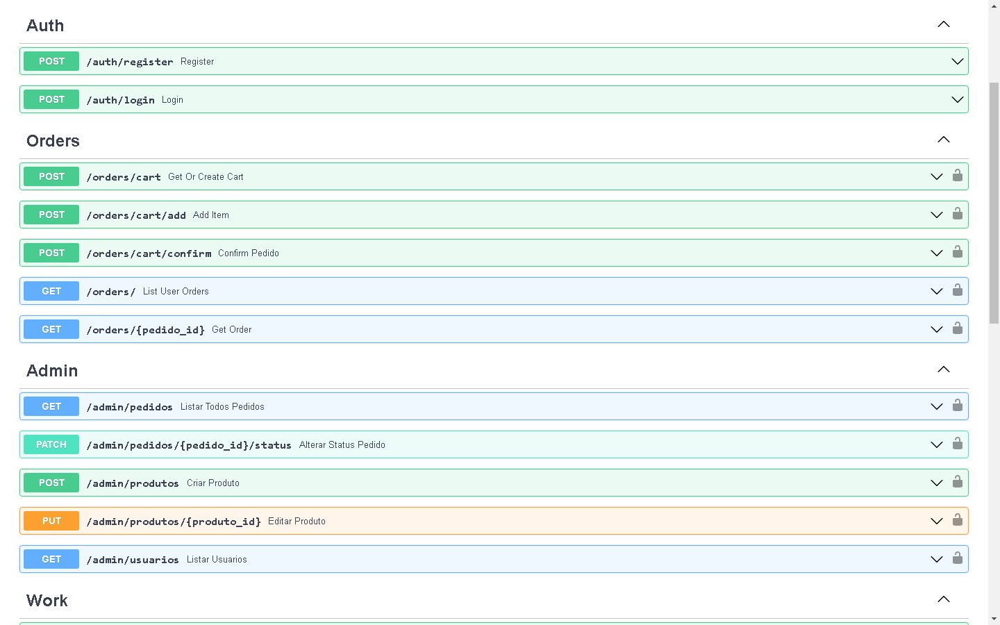
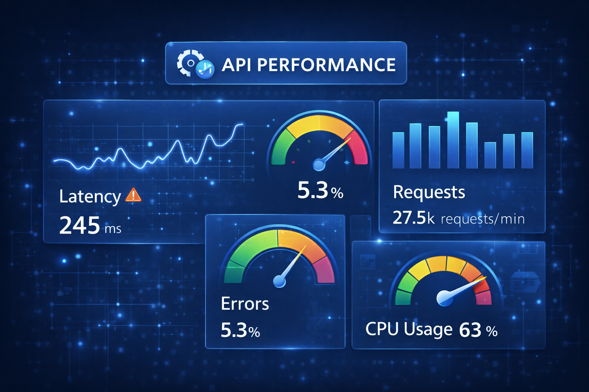
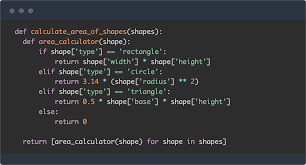
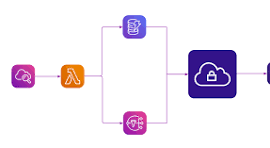
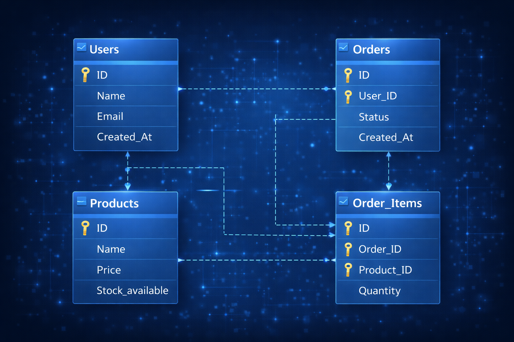
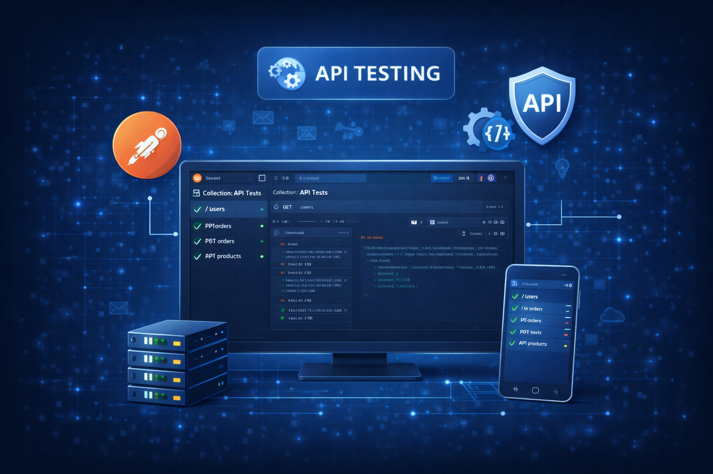

Código limpo. Performance otimizada. Arquitetura que escala.
Do MVP ao sistema enterprise, eu entrego soluções que funcionam.
Framework moderno e rápido para APIs REST. Documentação automática, validação de dados e alta performance.
Microframework flexível para aplicações web e APIs. Ideal para projetos de médio porte.
Banco relacional robusto com suporte a JSON, full-text search e recursos avançados.
ORM poderoso com suporte a queries complexas, migrations e relacionamentos.
Cache em memória para sessões, filas de tarefas e dados temporários de alta velocidade.
Containerização para ambientes consistentes e deploy simplificado.
Pipelines automatizados para testes, build e deploy contínuo.
Reverse proxy e load balancer para alta disponibilidade.

FastAPI gera automaticamente documentação Swagger UI e ReDoc. Teste todos os endpoints diretamente no navegador com validação em tempo real.

APIs otimizadas com resposta em milissegundos. Async/await nativo, connection pooling e caching estratégico para máxima eficiência.

Arquitetura em camadas (Controller, Service, Repository), dependency injection, testes automatizados e type hints completos.

Endpoints REST com validação de dados, autenticação JWT, rate limiting e versionamento.
Lógica de negócio isolada e testável. Orquestração de operações complexas e integração com APIs externas.
Abstração do banco de dados. Queries otimizadas, transactions e cache de dados frequentemente acessados.
PostgreSQL com índices otimizados, particionamento de tabelas e replicação para alta disponibilidade.
Multi-stage builds otimizados, docker-compose para ambientes locais e Kubernetes-ready para produção.

Schema normalizado, índices estratégicos, migrations versionadas com Alembic e backup automatizado.

Testes unitários, de integração e end-to-end. Coverage reports, CI/CD pipelines e testes de carga.
APIs RESTful completas com autenticação, autorização, validação, documentação interativa e versionamento.
Arquitetura de microsserviços com comunicação via REST/gRPC, service discovery e circuit breakers.
Sistemas completos de gerenciamento com autenticação, autorização baseada em roles e auditoria de ações.
Sistemas de autenticação seguros com JWT, OAuth2, refresh tokens e proteção contra ataques comuns.
Processamento assíncrono de tarefas com Celery/RQ, agendamento de jobs e monitoramento de falhas.
Integração com APIs externas, webhooks, rate limiting e retry logic para requisições resilientes.
API completa com suporte a múltiplas organizações, JWT, refresh tokens, permissões granulares e auditoria de ações.
Plataforma completa com catálogo de produtos, carrinho, checkout, integração com gateway de pagamento e sistema de pedidos.
Serviço dedicado para envio de emails, SMS e push notifications com fila de prioridade e retry automático.
Do MVP ao sistema enterprise, eu desenvolvo soluções backend escaláveis,
seguras e de alta performance que realmente funcionam.